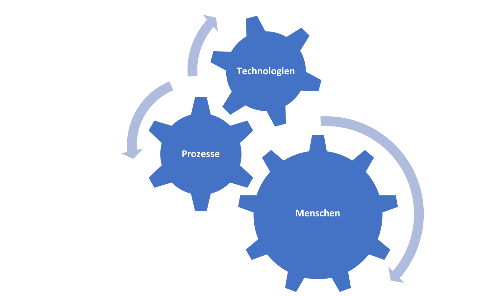

Wann: 22.-24. Oktober 2025 Wo: Schloss Marbach am Bodensee
Wollen Sie datenbasierten Entscheidungen in Ihrem Unternehmen verbessern und weiter ausbauen?
Wollen Sie Entscheidungsprobleme entpsrechend Ihrer strukturellen
Natur klassifizieren können,
um so die richtigen Schritte für deren korrekte Umsetzung durchzuführen?
Dann sind Sie bei der Kunst zur datenbasierten Entscheidungen genau richtig!
Datenbasierte Entscheidungen helfen, effizientere,
resilientere und transparentere Entscheidungen zu treffen, um damit
Wettbewerbsvorteilen zu steigern. Dabei gilt es stets, den Dreiklang
aus Technolgien, Geschäftsprozessen und Akteure zu beachten. Bei aller möglichen
automatisierten Entscheidungsfindung innerhalb eines Prozesses muss immer abgewogen werden,
ob eine dadurch geschaffene Objektivierung der Entscheidungsfindung nicht doch
der Notwendigkeit eines gewissen Anteils an menschlichem Einfluss und
Expertise gegenübersteht - für die Akzeptanz und die Qualität der Entscheidung
im Unternehmens ein wichtiger Faktor. Daher ist die Frage, wie datenbasierte Entscheidungen
im Unternehmen getroffen und etabliert werden können, stets von den
Gegebenheiten abhängig und braucht eine differenzierte in Augenscheinnahme.

Aus dieser Beobachtug heraus haben wir ein Seminarkonzept für
Führungskräfte und Entscheider entwickelt,
welches unter anderem vorsieht, durch strukturierte Vorabgespräch
ihr unternehmerisches Umfeld mit Ihre konkreten
Fragestellungen und Herausforderungen vorab kennenzulernen um diese in das Sememinar
mit einfließen zu lassen.
Das Seminar vermittelt fundierte Kompetenzen im Bereich der
datenbasierte Entscheidungsfindung. Neben einer Klassifikation von datenbasierten Modellen,
erfahren Sie, wie sich Fragestellungen in
ein datenbasierte Entscheidungsmodell
übersetzen lässt und welche Schritte aus organsitorischer Sicht als auch aus Sicht
der Daten dazu nötig sind.
So werden alle Aspekte einer datenbasierten Entscheidungsfrage
- wie das Ziel, der Zeithorizont, die Abhängigkeiten zu anderen Prozessen und
Akteuren im Unternehmen - behandelt und an Beispielen aus Ihrem unternehmerischen Umfeld diskutiert.
Am Ende des Seminars erhalten Sie so fundierte Kenntnisse, wie Fragen aus Sicht von
datengetriebenen Modellen zu stellen und zu lösen sind, so dass Sie in Ihrem Unternehmen
die Weichen stellen können, um in Zukunft datenbasiert zu entscheiden.
Flyer
| explore |
Eine Einordnung und Orientierung der gegenwärtigen Trends im Entscheidungsumfeld wie Künstliche Intelligenz, mathematische Optimierung, Data Science oder maschinelles Lernen. |
account_tree |
Identifizierung von Abhängigkeiten in unternehmerischen Entscheidungsproblemen und der Erkennung, wann menschliches Urteilsvermögen eingesetzt werden sollte. |
| euro |
Identifizierung entscheidungsrelevanter Kosten, Akteure und Blickwinkel. Wir geben eine Einordnung von datenbasierte Entscheidungssysteme in Organisationen und zeigen deren Zusammenhang mit der Digitalisierung. |
logo_dev |
Software- und IT-Kenntnisse zur Anwendung datenbasierte Entscheidungssystemen. |
| school |
Lernen und erfahren Sie, wie Sie datenbasierte Entscheidungsverfahren auf Ihre Herausforderungen anwenden können und zu einem signifikanten Mehrwert führen. |
groups |
Austausch mit Experten und anderen Industriepartner. |
| rule_settings |
Wenden Sie bewährte Vorgehensweisen für das Prozessmanagement bei der Datenanalyse an, einschließlich der Einrichtung von Arbeitsabläufen für datenbasierte Projekte. |
fitness_center |
Stärkung Ihrer analytischen Fähigkeiten, um in einer daten- und algorithmenbasierten Welt die richtigen Fragen zu stellen. |
| book |
Sie erhalten alle gezeigten und verwendeten Materialen plus Zusatzmaterial. |
handshake |
Ein persönliches und vertrauliches Vorabgespräch, damit wir die diskutierten Thmen und Beispielfälle auf Ihre Fragen und Herausforderungen anpassen. |
Wir sind ein Team aus Wissenschaftler und Praktiker, die zusammen seit mehreren Jahrzenten
sich mit der datenbasierten Entscheidungsfindung in der Praxis beschäftigen. Neben zahlreichen
wissenschaftlichen Publikationen auf diesem Gebiet, haben wir
diverse Herausforderungen in der Industrie, Wirtschaft und öffentlichen Sektor
unter Verwendung von datenbasierte Entscheidungssysteme gelöst
(siehe Referenzen ).
Dabei sind wir nicht nur Berater für unsere Kunden, sondern auch Entwickler
und Implementierer der erarbeitenten Lösungen.
Für uns stehen die Menschen, die Entscheider, mit Ihren konkreten Fragestellungen,
Probleme und Herausforderungen im Fokus. Die eingesetzten digitalen Werkzeuge sollen
dabei so ausgewählt und eingesetzt werden, dass diese eben dem Menschen
und seinen Bedürfnissen
dienen und so den Dreiklang Akteur, Prozess und Technolgie ermöglichen.
Mehr über uns finden Sie unter Referenten.